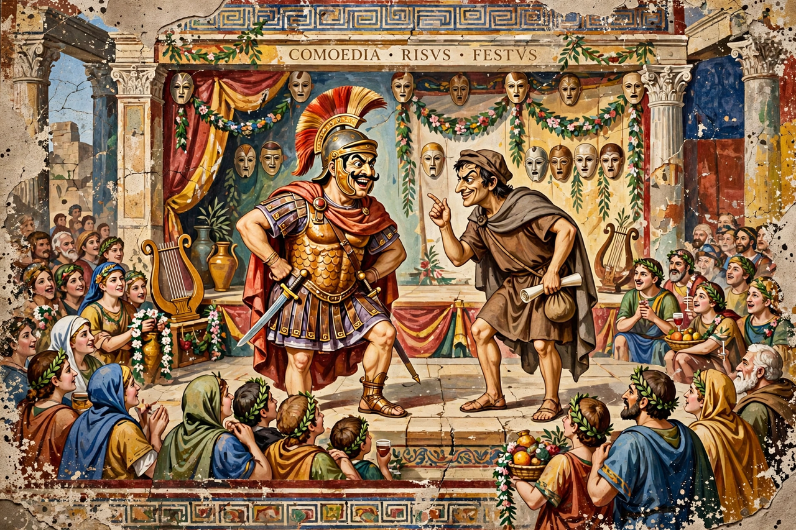

From Wikipedia, the free encyclopedia
| Born | c. 254 BC Sarsina, Umbria |
|---|---|
| Died | 184 BC Rome |
| Occupation | Playwright |
| Language | Latin |
| Genre | Comedy (fabula palliata) |
| Notable works | Miles Gloriosus, Amphitruo, Aulularia, Menaechmi |
Titus Maccius Plautus (c. 254 – 184 BC), commonly known as Plautus, was a Roman playwright of the Old Latin period. His comedies are the earliest Latin literary works to have survived in substantial form, and twenty-one plays attributed to him are still extant. Plautus adapted Greek New Comedy — especially works by Menander and others — into boisterous Roman farce filled with song, wordplay and trickery.

Plautus's comedies were performed at public festivals in Rome.
Little is known of Plautus's life. He was born at Sarsina in Umbria and, according to ancient tradition, worked in a theatre company in Rome, lost money in trade, and laboured in a mill before turning to writing plays. His name itself looks like a stage joke: Titus Maccius Plautus roughly suggests a clownish character with big, flat feet. His plays were immensely popular during his lifetime and long afterwards.
Scholars of the second century BC faced hundreds of plays circulating under Plautus's name; the scholar Varro established a canon of twenty-one genuine works, the "Varronian" plays, which survive complete or nearly so. They include Amphitruo, Asinaria, Aulularia (The Pot of Gold), Bacchides, Captivi, Curculio, Menaechmi, Mercator, Miles Gloriosus (The Braggart Soldier), Mostellaria (The Haunted House), Pseudolus, Rudens and Trinummus.
Typical plots involve a clever slave (servus callidus) outwitting a stern father or a pimp to unite young lovers; a boastful soldier; mistaken identities, often of long-lost twins; and miserly old men guarding pots of gold. Plautus's Latin is vigorous, colloquial and inventive, and his plays contain large amounts of sung verse (cantica) set to musical accompaniment.
Plautus profoundly influenced European comedy. Shakespeare's The Comedy of Errors derives from the Menaechmi; Molière's L'Avare (The Miser) adapts the Aulularia; and the musical A Funny Thing Happened on the Way to the Forum (1962) combines several Plautine plots. His trickster slaves and braggart soldiers became stock figures of Western theatre.